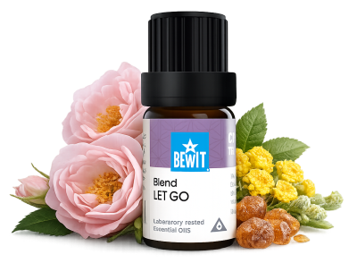

Pustit to a odpustit
pro lehkost a nový začátek
Staré křivdy, emoční tíha, situace nebo vztahy, ze kterých nejde ven. Ukáži vám, jak přirozeně uvolnit to, co vás drží v minulosti, a vytvořit prostor pro lehčí a svobodnější život.

pro lehkost a nový začátek
Staré křivdy, emoční tíha, situace nebo vztahy, ze kterých nejde ven. Ukáži vám, jak přirozeně uvolnit to, co vás drží v minulosti, a vytvořit prostor pro lehčí a svobodnější život.

Směs pro uvolnění minulosti, emočního napětí a starých připoutaností.
Pomáhá pustit situace, vztahy i vnitřní programy, které už neslouží, a otevřít se lehkosti.
💧 Jak použít: zředěný v nosném oleji (např. jojobový) nanes na hrudník nebo solar plexus — přičichni z dlaní a vědomě vydechni to, co chcete pustit.
Zjistit více →💧 Jak použít: zředěný v nosném oleji nanes na hrudník nebo přidej 3–5 kapek do difuzéru — ideálně při vědomém dýchání nebo meditaci.
Chci odpustit💧 Jak použít: přidej 3–5 kapek do difuzéru nebo zředěný v nosném oleji nanes na hrudník a zhluboka dýchej.
Chci svobodu💧 Jak použít: přidej 3–5 kapek do difuzéru nebo zředěný v nosném oleji nanes na hrudník a zápěstí.
Chci lehkostPustit to neznamená, že na tom nezáleží. Znamená to rozhodnout se, že vaše pohoda je důležitější než tíha, kterou nesete. Esence vám mohou být tichým průvodcem na té cestě.
Mohlo by vás také zajímat:
🌿 Všechny esence, které na tomto webu doporučuji, jsou od BEWIT. Jako registrovaný zákazník můžete nakupovat se slevou až 50 % na vybrané produkty.
Registrace u BEWIT zdarma →